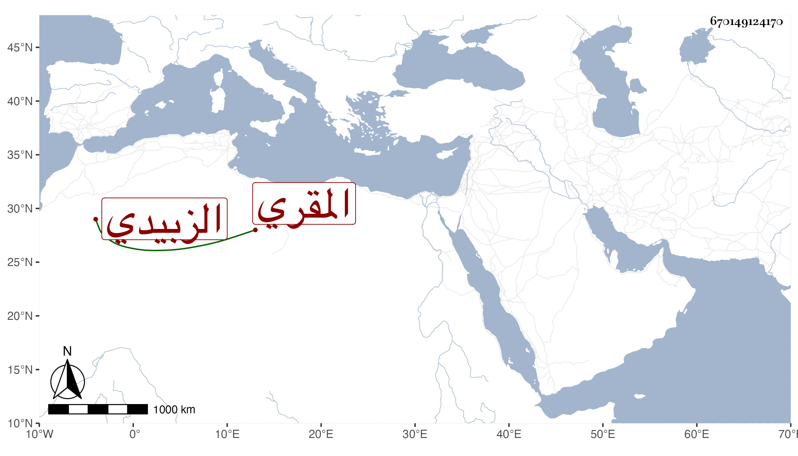

0902Sakhawi.DawLamic.ITO20230111-ara1.EIS1600.670149124170
Biography ID: 670149124170
44
أحمد بن علي بن أبي بكر بن شداد شهاب الدين الزبيدي المقري . ولد تقريبا سنة ست وخمسين وسبعمائة وسمع من والده وحدث سمع منه الفضلاء روى عنه ابن فهد فإنه أجاز له في استدعاء مؤرخ بالمحرم سنة تسع عشرة .
